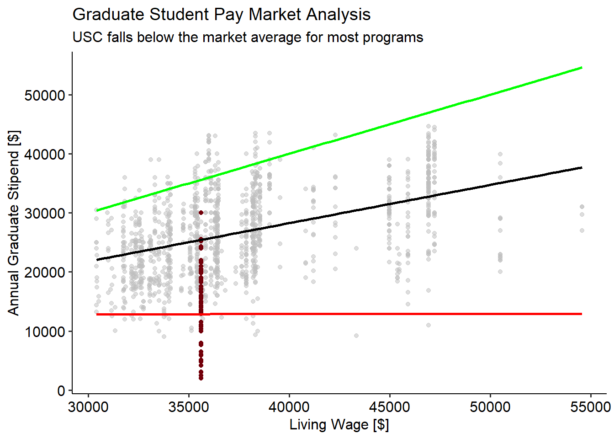
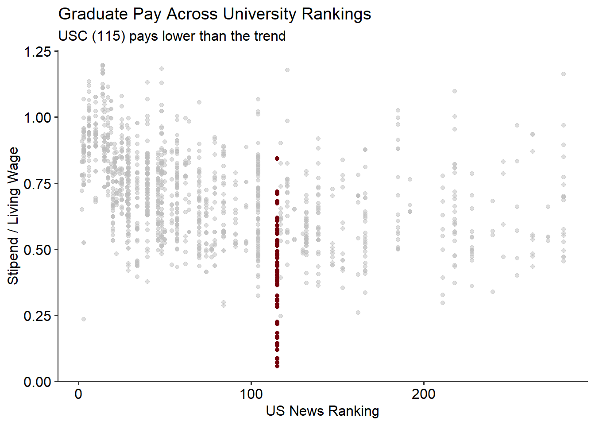

Executive Summary
Graduate student pay is a priorty issue for both the Graduate Student Association and the Unversity as a whole. In the 2022 Graduate Student Needs Assessment, stipends and finacial support was identified as the primary concern for graduate students. To evaluate the current condition of graduate student pay and the cost of living in Columbia, GSA sent a survey to all graduate students asking for them to volunarity report their stipends and the cost of their basic needs (housing, food, transportation). With this information, GSA investigated how graduate student pay supports their basic needs and how pay compares to other national universities.
From an administrative and universtiy perspective, low graduate student pay decreases the competitiviness of USC’s graduate programs. Graduate students are a critical function of the unversity. They provide work as teachers, researchers, and mentors throughout the university. To recruit top candidates to work as graduate students, USC needs to pay graduate students a rate competitive with the pay from other national universities. By comparing reported stipends by program to a national repository of graduate student pay rates, it was found that USC systematically pays less than other universities. Across all academic disciplines, USC pays $8,926.64 less than the market average, having adjusted for the cost of living in different metro areas. While there is large variation in graduate pay based on program type, below-market pay was a consistent finding for the vast majority of programs.
From a graduate student perspective, low stipend amounts have become a concern with the increased cost of living over recent years. It was found that all programs are paying below the living wage for a single individual in the Columbia Metro Area. When evaluating just the cost of basic necessities, graduate pay tends to be inadequate. The average graduate student stipend is $15,047.22/year. However, the average cost of basic necessities was $21,514.84/year. Many students then seek alternative methods to supplement their income, often through loans. 43.1% of Master’s students reporteded taking out loans while 21.1% of Doctoral students reported taking loans. There was a clear relationship between graduate student pay and the likelihood of taking out loans. While graduate students are pursuing advanced degrees in hopes of increasing career qualifications, often they also function as university employees. Graduate student pay should at a minimum facilitate students to meet their basic necessities without incurring debt.
To both remain competitive and properly support graduate student pay, USC needs to evaluate how to increase graduate student pay across all programs. Graduate student pay across the nation has become a major discussion in higher education. GSA’s analysis suggests that USC is falling critically behind in this issue. Recently, several universities have made plans to increase their graduate student pay. While graduate student pay is a complex issue due to the decisions made at several different levels (universtiy, college, deptartment), it is clear that low pay is an urgent issue for USC administration.
Market Analysis
Data Sources & Methods
To assess how other universities graduate student pay compares to USC, graduate student pay information was collected from a public-survey recording graduate stipends (link). For comparison, stipend pay information was limited to reports which were more recent than the 2020-21 academic year. Data were not fully QAQC’d so several reports had to be discarded. Additionally, only reports from national universities (ranked by US News top 250) in major metropolitan areas were considered. Finally, programs were only considered if they matched a program offered by USC for direct comparison. In total, this yielded 1388 individual reports from 769 programs (54 unique) across 138 US universities.
USC stipend data were collected from the 2023 GSA Stipend and Cost of Living Survey. After QAQC, 324 individual responses were available from 63 programs across all 11 Colleges/Schools in the University. Individual responses within a program were averaged to better estimate the standard stipend offered by a department.
To account for differences in cost of living between university locations, stipends were standardized to the living wage for a single individual in the metro area. These data were cacluated from the MIT Living Wage Calculator. For visualization purposes, the poverty line was also accessed from this source. Additionally a simple linear regression for living wage predicting stipend was conducted using comparison universities to establish the “market average” stipend across regions. For reference the single-individual living wage in the Columbia metro area is $35,609.6/year (MIT Calculator).
Core Findings
USC is far below market
It was found that USC is systematically paying below the cost-of-living adjusted market average ($25,521.05). The average program stipend at USC is $15,865.83. It should be noted that our survey included a few professional students (~7.7% of respondents, 13.8% of programs) whose stipends are generally lower than that of academic graduate students. Additionally, professional students are not well represented in our comparison dataset. When removing professional students the average stipend is $16,594.41, still $8,926.64. While professional students can explain a few instances of extremely low wages seen in the above figure, they do not encompass all sub-poverty stipends. 30.4% of investigated programs have average stipends reported to be less than the poverty wage in Columbia, SC. There is very large variation between programs and program types. These data are explored further in Appendix A.
Comparisons by program, college, or program type can be explored using the stipend explorer widget. Note that the link may have expired if accessed later. To get specific data, you can explore Appendix A, or directly contact the Secretary of Data Management, Alex Bart, at AB93@email.sc.edu.
Higher ranked universities tend to pay graduate students higher.

Graduate students play an important role in the university system. While US News Rankings are not a perfect indicator of a university’s overall performance, they provide a clear indicator for overall university prestige. It is clear that higher-ranked universities pay a higher graduate student pay. USC, currently is ranked at 115. For this ranking, the distribution of graduate pay is shifted lower than would be expected.
Basic Needs Summary
, with 50% of respondents basic needs costing between $9,600 and $34,800.
, with 50% of stipends paying between $12,915.38 and $20,000.00.